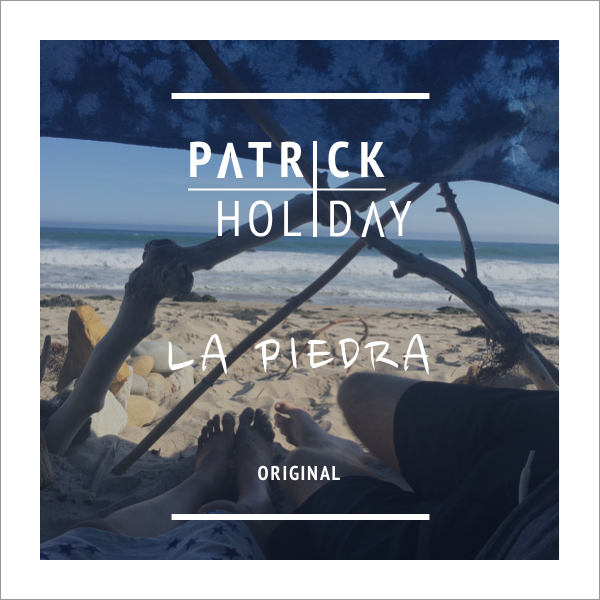

I've started putting more focus on writing songs for an upcoming EP, but in the meantime I'm releasing the back tracks once they're in a presentable place.
I heavily re-worked the Nas classic "If I Ruled The World", sampling Humphrey Bogart and his even-more-classic "Maltese Falcon".

I liked Rihanna's song "Stay", but always felt like it would've been better if it was a collab with Drake. So what did I do? I made the version I wanted to hear.